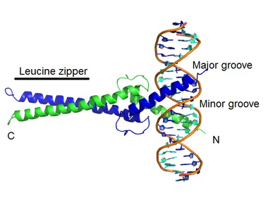
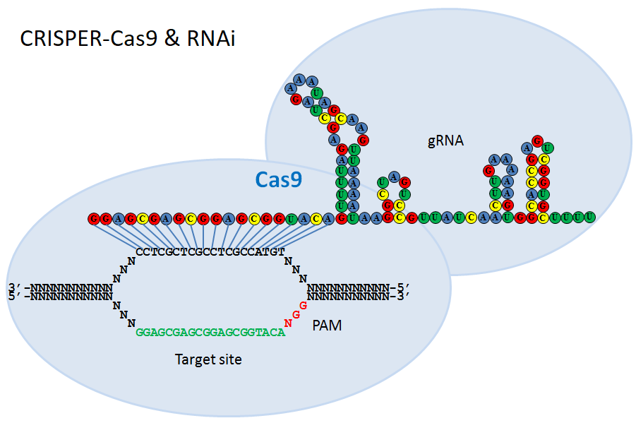
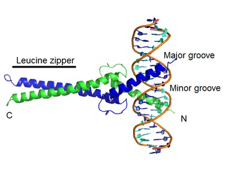
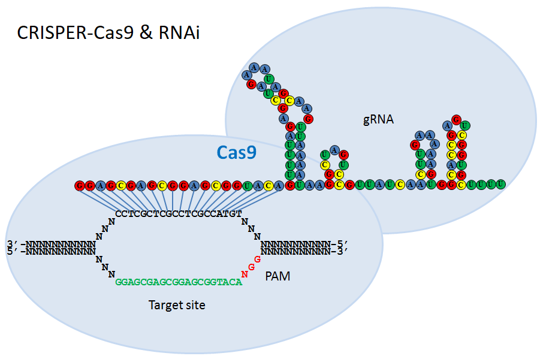

Bradley C. Winters
Readings
Podcasts
Science Links
Computing Links
Bioinformatics Links
html/Influences.html
BioMath
Other Interests
Work History
Education
- Over 35 professional training courses in Unix, Veritas, EMC & Oracle
Courses after Formal Degrees
University of California, San DiegoChemoinformatics
Biostatistics
Finding Hidden Messages in DNA
Genome Sequencing
Comparing Genes, Proteins, and Genomes
Genomic Data Science and Clustering
Icahn School of Medicine at Mount Sinai
Introduction to Systems Biology
University of Michigan
Using Databases with Python
Programming for Everybody (Getting Started with Python)
Using Python to Access Web Data
Python Data Structures
University of California, Berkeley
Molecular Biology
Genetics
University of California, Davis
BIS 103: Bioenergetics and Metabolism
MCB 182: Principles of Genomics
Current Interests
Software development of novel algorithms and deep learning to gain insight in Biological processes. Where Do New Genes Come From?Shrinking Bat DNA and Elastic Genomes
Esophageal cancers resurrect ancient retroviruses hidden in our genome.
Software for Biological Topics


 


